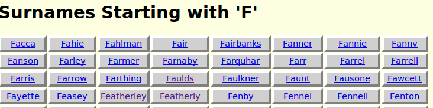
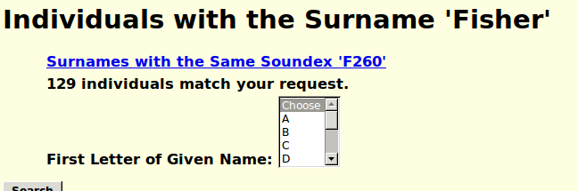

List of Surnames; Help
As an alternate path to the individual web pages you may select the first letter of the surname. This displays a list of all of the surnames in the database starting with that letter.
Selecting a surname displays a list of all of the individuals with that surname, as long as there are less than 100.

If there are more than 100 you are given the option of selecting one or more letters representing the beginning of given names to select. For example if you are looking for someone named Ellen or Helen you may select both the letter 'E' and the letter 'H' by holding down the Ctrl button while selecting the subsequent letters.
Select the "Search" button with the mouse, or press Enter, when you have chosen all of the initial letters you wish. You will then be presented with a list of all matching individuals to choose from.